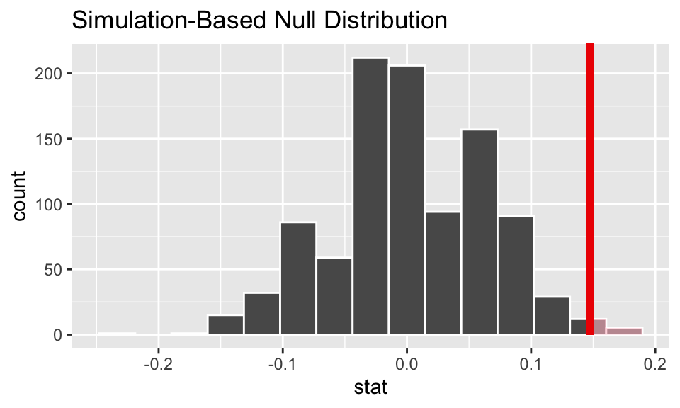

Building on the work we’ve done this week to run a hypothesis test, we will use the infer package to complete an entire randomization test.
The goals for today include:
using infer to complete a randomization hypothesis test
creating a histogram representing a null sampling distribution
calculating a p-value
summarizing the hypothesis test in words of the problem
Advice for turning in the assignment
knit early and often. In fact, go ahead and knit your .Rmd file right now. Maybe set a timer so that you knit every 5 minutes. Do not wait until you are done with the assignment to knit.
The assignment part of the lab is ONLY the last six questions at the very bottom. However, the commands in the first half of the assignment are key to doing the second half.
Save the .Rmd file somewhere you can find it. Don’t keep everything in your downloads folder. Maybe make a folder called StatsHW or something. That folder could live on your Desktop. Or maybe in your Dropbox.
Getting started
The infer vignette is excellent: https://infer-dev.netlify.app/index.html
As we go through the lab today, focus on the names of the function to make sure that you connect the name of the function to the action of the function.
Load packages / data
In this lab we will use new syntax from the infer package. The syntax is meant to focus understanding on the hypothesis testing process. So for each line, pay attention to what the code is doing.
The data come from a randomized clinical trial to discern the difference between a sugar gargle versus licorice gargle after undergoing elective thoracic surgery on the amount of coughing post-surgery (reference and data here: https://www.causeweb.org/tshs/licorice-gargle/).
We know that the study was an experiment, so there should be no systematic differences (in other variables) between the group who received the sugar versus the licorice gargle.
We hope to rule out random chance as the reason for the difference in proportions of the who is coughing after surgery. (We hope to reject the null hypothesis.)
If we can reject the null hypothesis, we conclude that the gargle type and coughing outcome are not independent. That is, the type of gargle used changes the probability that the patient will have coughing after surgery.
A randomization test
# to control the randomnessset.seed(47)licorice_study %>%head()
The first thing we need to do is to find the observed statistic of interest (here the difference in sample proportions). Note that R is happy to act as a calculator, but we’re going to use the syntax associated with the test to get the value of interest.
Well, okay, first as a calculator:
(49/117) - (32/118)
[1] 0.147617
Now using the infer syntax, we’ll specify the variables of interest (which is response and which is explanatory?). Also, we’ll need to specify what a “success” means and the order of subtraction. Note that we get the same value as we did when using R as a calculator.
diff_obs <- licorice_study %>%specify(cough ~ gargle, success ="some") %>%calculate(stat ="diff in props", order =c("sugar", "licorice"))diff_obs
Response: cough (factor)
Explanatory: gargle (factor)
# A tibble: 1 × 1
stat
<dbl>
1 0.148
Step 2. Shuffle the data under H0
The point of the hypothesis test structure is to have an understanding of what types of values might be seen just by chance (if the type of gargle really wasn’t doing anything). The idea is that 81 people were going to have some coughing after surgery anyway (regardless of gargle) – that’s the null hypothesis! And we expect some variability in which group those 81 people end up. How big are the differences in proportions? is 14.8% big? or is it small?
Hint: go back to this applet to see how the shuffling works! http://www.rossmanchance.com/applets/2021/chisqshuffle/ChiSqShuffle.htm?FET=1
A note on the code… pay attention to the steps here:
specify() gives the appropriate information on the variable types. Always: responsevariable ~ explanatoryvariable
hypothesize() gives the null hypothesis of interest. Here we are performing a test of independence, but that will change over the semester as we do different types of tests.
generate() swaps things around as if the null hypothesis were true. Here we are permuting the data (randomly reassigning it) as if the gargle didn’t have an impact.
Take a look at the output of the first three steps, before calculating the difference in proportions. It’s hard to tell just by looking at the dataframe, but really what you see is that different people have been assigned to different treatments (sugar or licorice).
licorice_study %>%specify(cough ~ gargle, success ="some") %>%hypothesize(null ="independence") %>%generate(reps =4, type ="permute") %>%# set reps=4 just to see the processhead()
calculate() finds the statistic (here our statistic is the difference in proportions) for each of the permuted datasets.
Keep all of those differences, and take a look at them. Is 14.8% is big? or is it small? can you tell?
set.seed(4774)null_licorice <- licorice_study %>%specify(cough ~ gargle, success ="some") %>%hypothesize(null ="independence") %>%generate(reps =1000, type ="permute") %>%# need a lot of reps to truly understandcalculate(stat ="diff in props", order =c("sugar", "licorice"))null_licorice %>%head()
Fortunately for us, we saved all the differences in proportions into an object that was called null_licorice. We can visuzlize() the differences!
visualize(null_licorice)
It is still a little bit hard to tell where that 14.8% falls. It doesn’t seem way outside the range, but it is in the tails. Let’s plot the observed difference on the plot of null differences. Remember, when adding layers to a plot we use + instead of %>%.
Fun activity: the direction argument has different options. Try them out: direction = "less" or direction = "two-sided". What happens to the plot?
visualize(null_licorice) +shade_p_value(obs_stat = diff_obs, direction ="greater")

Step 4. Calculate the p-value
Recall that the p-value is the probability of the observed difference or more extreme if the variables are independent (that is, if the null hypothesis is true and licorice doesn’t impact whether or not you are more likely to cough post-surgery).
Fun activity: the direction argument has different options. Try them out: direction = "less" or direction = "two-sided". What happens to the p-value?
null_licorice %>%get_p_value(obs_stat = diff_obs, direction ="greater")
# A tibble: 1 × 1
p_value
<dbl>
1 0.017
Step 5. Make a conclusion
The p-value here is 0.034. We’re saying that if those 81 people were going to cough anyway, regardless of gargle, only 3.4% of the time would so many of them have landed in the sugar group just by chance. The probability of the observed difference seems pretty small. It makes us think that chance was probably not the mechanism that put so many patients into the sugar group. Instead, this process makes us believe that it was actually the licorice (in contrast to the sugar) that reduced the coughing.
Because this was a randomized trial, all other characteristics of the patients are balanced out. And we seem to have ruled out chance as the mechanism.
Conclusion: the difference in probability of coughing is due to the choice of gargle. That is, licorice gargle reduces the probability of coughing post-operative for this particular elective thoracic surgery.
To Turn In
The data
The data for the write-up part of the lab is on a diabetes clinical trial1 and available from the openintro package. (Note: in the original study there were three treatments, today we’ll just compare metformin with a lifestyle-intervention program.)
Three treatments were compared to test their relative efficacy (effectiveness) in treating Type 2 Diabetes in patients aged 10-17 who were being treated with metformin. The primary outcome was lack of glycemic control (or not); lacking glycemic control means the patient still needed insulin, which is not the preferred outcome for a patient.
library(infer) # for doing the randomization testlibrary(openintro) # home of the dataset for the labdata(diabetes2)diabetes <- diabetes2 %>%filter(treatment !="rosi") %>%mutate(treatment =droplevels(treatment))diabetes %>%table()
outcome
treatment failure success
lifestyle 109 125
met 120 112
Q1. Learning Community Q
Describe one thing you learned from someone in your learning community this week (it could be: content, logistical help, background material, R information, etc.) 1-3 sentences.
Q2. The study
Answer the following questions with respect to the study (feel free to read about the study more on your own, or you might type into the console: ?diabetes2).
What are the observational units?
What are the variables? Label them as explanatory and response.
Is it an experiment or an observational study?
Was the treatment randomly assigned? If so, what might you conclude at the end of this lab? If not, what are you unable to conclude? Explain.
Were the observational units randomly selected from the population? (Please specify the population which you think is most relevant here.). If so, what might you conclude at the end of the lab? If not what are you unable to conclude? Explain.
Q3. Hypotheses
Write out the null and alternative hypotheses. Use words like diabetes in your claims. For this lab, let’s say you don’t have scientific background to think that one treatment over the other might be best. Instead, the goal is to find out whether there is a difference between the two treatments.
Q4. Observed test statistic
Using the infer syntax, calculate the observed test statistic.
Q5. Null test statistics
Calculate 1000 null test statistics from 1000 different permutations of the data.
Q6. Visualize
Using the results from Q5, make a histogram to visualize the observed test statistic. Include the observed statistic, and shade the area of the histogram which is “more extreme” from the observed statistic. (Remember that the hypothesis claim here is that the treatments are different.)
Q7. p-value
Calculate the p-value. Remember that the hypothesis claim here is that the treatments are different.
Q8. Conclusion
Give a conclusion about the hypothesis claims. Do you reject H0 or not? Do you have evidence for cause? To what population can you / can’t you generalize the results?
praise()
[1] "You are amazing!"
HW & Lab assignments will be graded out of 5 points, which are based on a combination of accuracy and effort. Below are rough guidelines for grading.
Score & Description
5 points: All problems completed with detailed solutions provided and 75% or more of the problems are fully correct.
4 points: All problems completed with detailed solutions and 50-75% correct; OR close to all problems completed and 75%-100% correct. An assignment will earn a 4 if there is superfluous information printed out on the assignment.
3 points: Close to all problems completed with less than 75% correct
2 points: More than half but fewer than all problems completed and > 75% correct
1 point: More than half but fewer than all problems completed and < 75% correct; OR less than half of problems completed
0 points: No work submitted, OR half or less than half of the problems submitted and without any detail/work shown to explain the solutions.
General notes on homework assignments (also see syllabus for policies and suggestions):
please be neat and organized, this will help me, the grader, and you (in the future) to follow your work.
be sure to include your name on the assignment
please include at least the number of the problem, or a summary of this question (this will also be helpful to you in the future to prepare for exams).
for R problems, it is required to use R Markdown. You can write out other problems with pencil and combine pdf as appropriate.
please do not print errors, messages, warnings, or anything else that makes your homework unwieldy. You will be graded down for superfluous printouts.
in case of questions, or if you get stuck please don’t hesitate to email me or DM on Discord! The sooner (and more often) questions get asked, the better for everyone.
Footnotes
Zeitler P, et al. 2012. A Clinical Trial to Maintain Glycemic Control in Youth with Type 2 Diabetes. N Engl J Med.↩︎